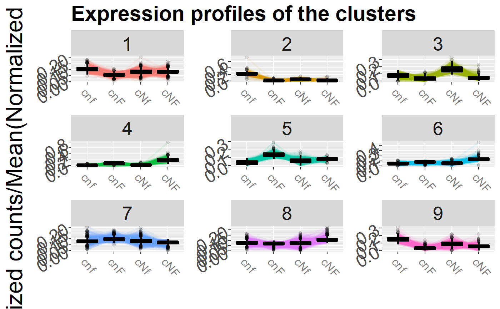
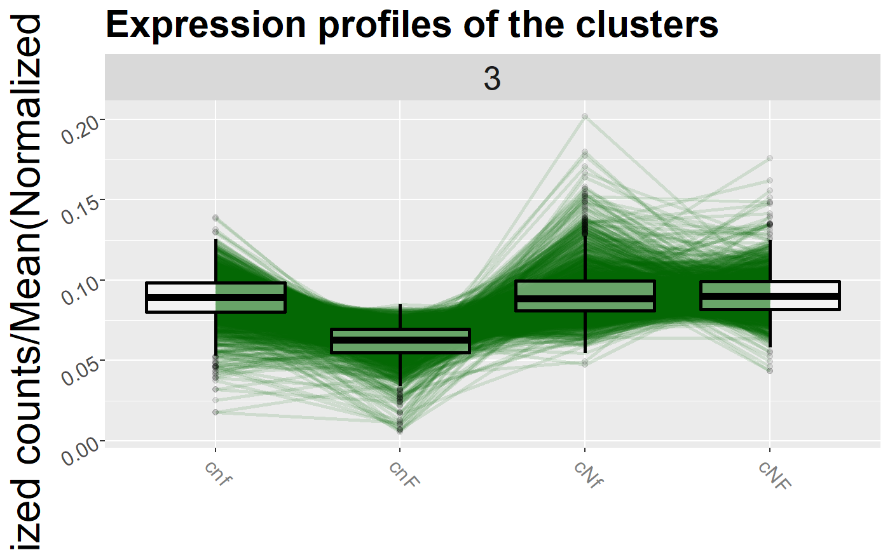

Draw profiles of a clustering
draw_profiles( data, membership, conds, expression = "profiles", k = NULL, nrow = 3 )
| data | normalized counts |
|---|---|
| membership | membership item of the coseq object returned by run_coseq object |
| conds | conditions on which to perform clustering, ingoring the others |
| expression | if it is set to "profiles" (default), plots expression/sum(expression). if "counts", plots log(Counts+1) |
| k | if NULL (default), plot all the clusters. Else, plot the clusters in the vetcor k. |
| nrow | on how many rows display the cluster profiles if k is NULL |
ggplot
data("demo_data_At") tcc_object <- DIANE::normalize(demo_data_At$raw_counts, demo_data_At$conditions, iteration = FALSE)#>#>threshold = 10*length(demo_data_At$conditions) tcc_object <- DIANE::filter_low_counts(tcc_object, threshold) normalized_counts <- TCC::getNormalizedData(tcc_object) fit <- DIANE::estimateDispersion(tcc = tcc_object, conditions = demo_data_At$conditions)#> [1] "cNF" "cNF" "cNF" "cnF" "cnF" "cnF" "cNf" "cnf" "cnf" "cNf" "cNf" "cnf" #> cnf cnF cNf cNF #> cNF_3 0 0 0 1 #> cNF_2 0 0 0 1 #> cNF_1 0 0 0 1 #> cnF_2 0 1 0 0 #> cnF_1 0 1 0 0 #> cnF_3 0 1 0 0 #> cNf_1 0 0 1 0 #> cnf_2 1 0 0 0 #> cnf_1 1 0 0 0 #> cNf_2 0 0 1 0 #> cNf_3 0 0 1 0 #> cnf_3 1 0 0 0 #> attr(,"assign") #> [1] 1 1 1 1 #> attr(,"contrasts") #> attr(,"contrasts")$groups #> [1] "contr.treatment" #>#> Warning: norm factors don't multiply to 1topTags <- DIANE::estimateDEGs(fit, reference = "cNF", perturbation = "cnF", p.value = 0.01) genes <- topTags$table$genes clustering <- DIANE::run_coseq(conds = unique(demo_data_At$conditions), data = normalized_counts, genes = genes, K = 6:9)#> **************************************** #> coseq analysis: Poisson approach & none transformation #> K = 6 to 9 #> Use set.seed() prior to running coseq for reproducible results. #> **************************************** #> Running K = 6 ... #> [1] "Initialization: 1" #> [1] "Log-like diff: 9.83259654335987" #> [1] "Log-like diff: 14.1699216327095" #> [1] "Log-like diff: 10.0395316306507" #> [1] "Log-like diff: 10.336858994218" #> [1] "Log-like diff: 14.052428610394"#> #> #> #> #> #> #>#> #> #> #> #> #> #>#> #> #> #> #> #> #>#>DIANE::draw_profiles(data = normalized_counts, clustering$membership, conds = unique(demo_data_At$conditions))#>DIANE::draw_profiles(data = normalized_counts, clustering$membership, conds = unique(demo_data_At$conditions), k = 3)#>